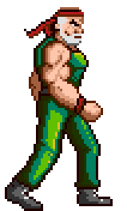
Walk
✚Move Papi in all 8 directions, across the whole width of the carriage.
The subway is packed with thugs, and Papi has no intention of giving up his seat. Here is everything he can do, on a 3-button Mega Drive pad.

Move Papi in all 8 directions, across the whole width of the carriage.
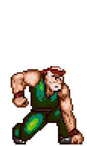
Hop over the beer bottles Brook throws at you.
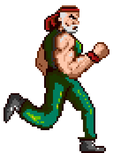
Tap forward twice and keep holding. While running: A for the Grand Upper, C for a long jump.
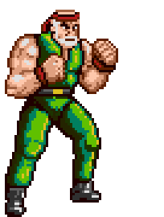
Tap repeatedly to chain up to the straight punch. Shingo and Breek can block them: mix it up.
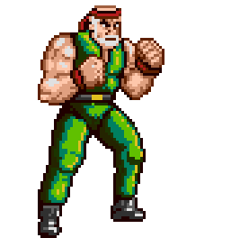
Pushes the enemy back. On the 3rd in a row, he blocks or strikes back: don't spam it.
Keep B held after the kick: Papi shakes, then shakes faster when ready. Let go and the enemy bounces off one edge of the screen, then the other.
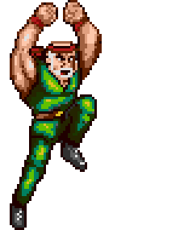
A kick in mid-air. Papi lands heavily, so time it well.
Papi crouches, then charges fist first and hits every enemy in his path. It breaks through Shingo's guard.
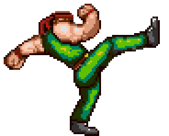
Press both together: Papi spins leg out and hits all around him, invincible. It costs 3 health points, shown in yellow: win them back by landing hits (1 point every 2 hits), unless you get hit first. You need more than 3 health points to use it.
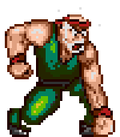
Papi drops to one knee and pounds him on the floor. A again: up to 4 hits.
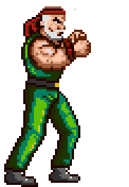
Seated passengers won't throw anything on their own: hit them. The long-haired guy throws a Paprium can, the big bald one throws food.
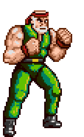
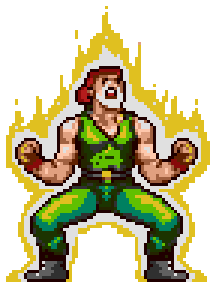
The gauge above your health fills with every hit you land. A can fills two thirds of it.
When it flashes, Ahold hold A for a moment. Papi roars, wrapped in flames, then goes berserk for 10 seconds: faster, quicker blows that hit twice as hard, and every hit sends enemies flying.
Finishing move: during rage, take an enemy out with a Grand Upper →→+A and watch closely.
Two players: press START on the second pad and Petrov joins the fight.